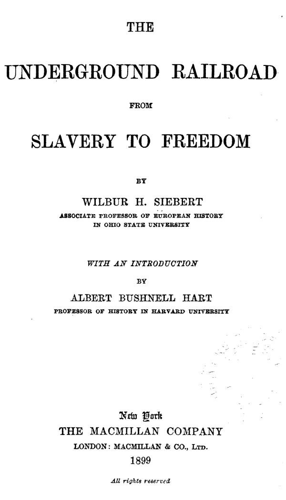
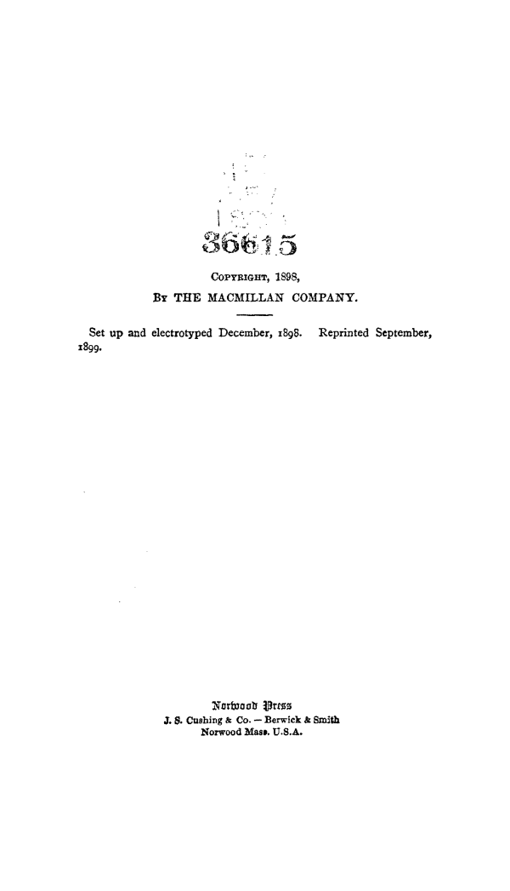

<titlePage>
<pb/>
<docTitle>
<titlePart type="main">THE <lb/>
UNDERGROUND RAILROAD <lb/>
FROM <lb/>
SLAVERY TO FREEDOM</titlePart>
</docTitle>
<byline>BY <lb/>
<docAuthor>WILBUR H. SIEBERT</docAuthor>
ASSOCIATE PROFESSOR OF EUROPEAN HISTORY <lb/>
IN OHIO STATE UNIVERSITY</byline>
<titlePart type="desc"><i>WITH AN INTRODUCTION</i>
BY <lb/>
ALBERT BUSHNELL HART
PROFESSOR OF HISTORY IN HARVARD UNIVERSITY</titlePart>
<docImprint>
<pubPlace><hi rend="gothic">New York</hi></pubPlace>
<publisher>THE MACMILLAN COMPANY <lb/>
LONDON: MACMILLAN & CO., <smcap>Ltd.</smcap></publisher>
<docDate>1899</docDate>
<i>All rights reserved</i>
<pb/>
<smcap>Copyright</smcap>, 1898, <lb/>
<smcap>By THE MACMILLAN COMPANY</smcap>. <lb/>
Set up and electrotyped December, 1898.   Reprinted September, <lb/>
1899. <lb/>
<lb/>
<lb/>
<lb/>
<hi rend="gothic">Norwood Press</hi> <lb/>
J. S. Cushing & Co. — Berwick & Smith <lb/>
Norwood Mass. U.S.A.
</docImprint>
</titlePage>